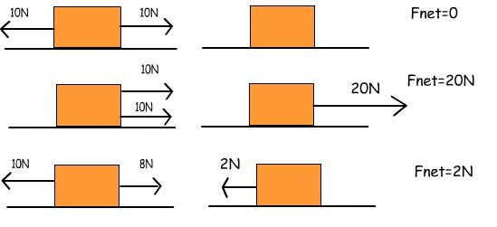

The mass of a CO2 dragster can significantly influence its speed during a race. A CO2 dragster is a small, streamlined vehicle typically made of wood, plastic, or other lightweight materials, powered by a carbon dioxide (CO2) cartridge. Mass has a really special relationship with acceleration, as we will discover later in this section. But to get a general idea, we will first familiarize ourselves with Newton's second law, F=ma.
The formula
F=ma represents Newton's second law of motion, a fundamental principle in classical mechanics introduced by Sir Isaac Newton. Let's break down the components of this formula:
F: F represents the net force applied to an object. It is measured in units of Newtons (N).
For a small recap on net force, a net force is the total vector sum of force acting upon an object.

As an example, if two forces of 10 newtons are known as "opposite vectors (vectors that goes in different directions), these forces will cancel out to get a total vector sum of 0 newtons. The other examples in the image works the same way. It is also known that net force can be negative and can happen in all directions (vectors can be combined at any points A and B as well)."
m: m stands for the mass of the object in motion. Mass is the amount of matter an object contains and is typically measured in kilograms (kg). This is different from weight as weight can be easily manipulated by gravity.
a: a represents acceleration, which is the rate of change of an object's velocity over time. Acceleration is measured in meters per second squared (m/s²).
Newton's second law states that the net force acting on an object is directly proportional to the product of its mass and acceleration. Mathematically, this is expressed as: F=ma. In simpler terms, this law tells us that the force required to accelerate an object is directly proportional to the mass of the object and the rate at which you want to change its speed (acceleration). For instance, a heavier object will require a larger force to achieve the same acceleration as a lighter object.
Image depicting the relationship between mass and acceleration
Knowing Newton's second law is essential as we know a very fast acceleration from the very beginning of the track is a must for a fast time. As the image indicates, an object with a small mass has a greater acceleration than an object with a large mass. There are multiple ways to get rid of the mass on our dragster, but we must make sure that the mass of our dragster exceeds 45g.
Such ways to remove as much mass as possible from our dragster may include:
1) Reduce the length of the car.
The shorter the car is, the less matter is contains, therefore less mass. But again, it is important to make sure that the dragster remains over 8in in length.
2) Reduce any amount of unnecessary wood that doesn't affect the aerodynamics of the car.
Such wood may include the height of the car, and the width (Although there is a limit) that does not change the teardrop shape of the car.
3) Reduce the volume of the car.
When the volume of a contained gas is decreased, the pressure inside increases. Pressure propels a CO2 dragster forward by releasing compressed carbon dioxide (CO2) gas from a cartridge in a burst. When the CO2 cartridge is opened, the high-pressure gas is released, creating a forceful jet of gas in the opposite direction. According to Newton's third law of motion, this expulsion of gas backward generates an equal and opposite reaction, pushing the dragster forward. The magnitude and speed of the expelled gas contribute to the force (thrust) acting on the dragster, which accelerates it and drives it forward, ultimately powering the dragster in a race.
While we do have to keep in mind that there is a certain mass that is necessary for stability and proper weight distribution, an excessive mass can impede acceleration and speed due to an increased amount of net force that must act on the object for it to accelerate by a certain amount of m/s². Finding the right balance between mass and other design factors is crucial to achieve optimal speed in a CO2 dragster.